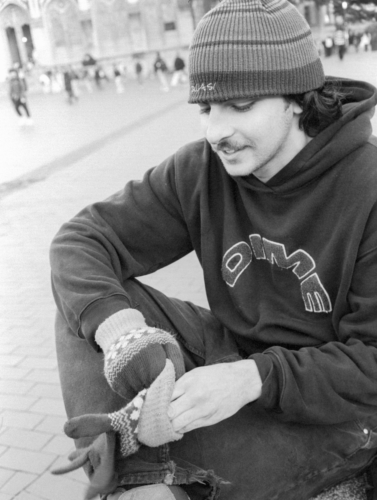
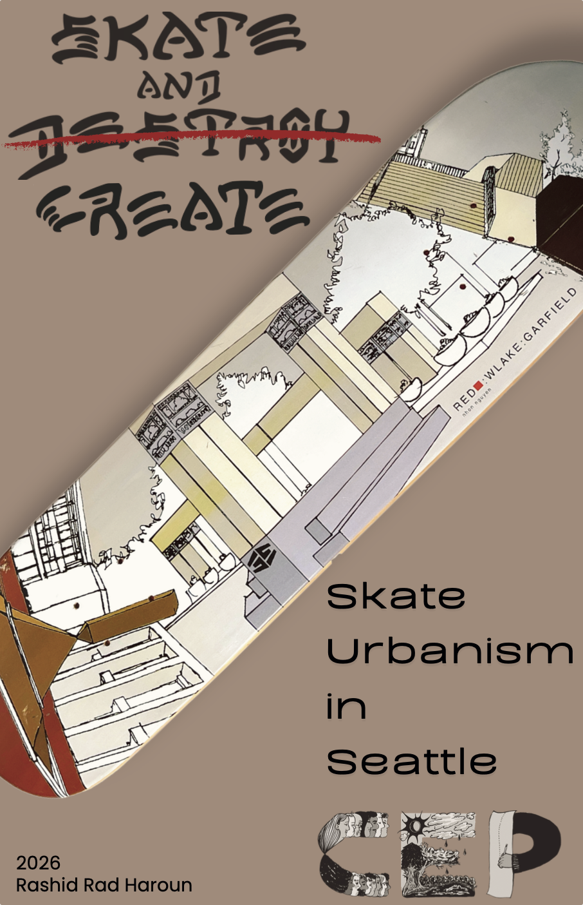

RashidHaroun
Hello! My name is Rashid Haroun, and I'm a recent graduate of Community, Environment, and Planning at University of Washington. As a native Seattleite, I have formed a close connection to the city and its various vibrant communities, which is a large reason why CEP stood out to me. Additionally, I'm an avid skateboarder and biker, which led me to become more aware of issues within the built environment.
While I care about all facets of CEP, I'm mainly interested in placemaking and activation efforts, improving the pedestrian experience, and public plazas, spaces, and their accessibility.
This E-Portfolio is intended to illustrate what I've learned and achieved over the past two years in CEP. It contains my senior project write-up, poster, 3 artifacts from my time at UW, and a reflective essay about my time in the major. Enjoy, and thank you for reading!

Academics
B.A — Community, Environment & Planning.
Senior
Project

Advocating for skateboarding as a method of reactivating Seattle's parks.
Leveraging the resources of Seattle Parks & Recreation while empowering the skate community to lead the building of the spaces themselves.
Temporary skate space at Dr. Blanche Lavizzo Park
Neighborhood Match Fund Grant application
Ongoing partnership with the Seattle Parks Foundation
With thanks to my project mentor, Tobias Coughlin-Bogue, whose advocacy around Westlake Center's renovation preserved its legacy as Seattle's most iconic skate plaza. His involvement opened the door to six months of engagement with the Parks Department.
Artifacts
Three pieces of work from my time at UW.
Grant Application Workshop
Grant Application Workshop I presented to fellow CEPsters. Used skills and knowledge acquired from applying for a Neighborhood Match Fund Grant during my Senior Project.
Seattle Parks Foundation — DBLside
Click here to check out our Project Partner website on Seattle Parks Foundation. Donations are much appreciated!
Cal Anderson Renovation Proposal
Preliminary presentation drafted with my mentor for the Parks Department to consider.
Reflection
I spent my first two years taking a variety of classes, hoping to learn more about what I wanted to pursue. I have an array of academic interests and passions, but I wasn't quite set on anything. I had an interest in urban design and planning thanks to a few intro courses I took in my freshman year, but I wasn't sure I could find my niche in the broad field. That is until I learned more about the "SkateUrbanism" movement, describing the collaboration between skateboarders and municipalities to integrate skateboarding into the urban fabric of cities. I realized there was tons of intersection between urban planning and skateboarding, an activity that has been my biggest passion for quite some time. I began to dig deeper into the essays, interviews, and videos that other long-time skateboarders have published detailing the activity's unique relationship with the built environment.
Through my passion for skateboarding, I realized that I've always truly cared about issues within cities and our urban fabric in a way that I'd never truly dissected. And in discovering CEP, I realized that I could tailor my academic journey to learn more about the aspects of the vast field that I care about most. In my discovery of urban issues I took a class which heavily focused on the "Right to the City" theory popularized by Henri Lefebvre. This class led me to further connect my passion of skateboarding with planning and theory, as the act fell perfectly into Lefebvre's classification of a creatively productive activity. He argued that such activities, especially when performed by inhabitants, are a large driving force which makes cities special. It led me to feel more validated in my stance that skateboarding and other forms of urban leisure and play deserve to exist and flourish within cities, as opposed to the longstanding norm of designing against them. This foundational idea led me to the basis of my Senior Project, which is where I truly believe CEP's unique nature best served me.
Leveraging CEP's open-ended nature wasn't easy, as it could feel like there were too many options to pursue at times. I needed to refine my goals to be realistic, especially with a time limit impending on my Senior Project. Another aspect of the Senior Project I heavily appreciate is its focus on mentorship. Without Tobias Coughlin-Bogue, my project mentor, I wouldn't be able to have anywhere near as much to show for my project. But I kept my ear to the Seattle skate community, and was lucky to catch wind of Tobias's recent advocacy efforts with the city to ensure that Westlake Center's renovation was skater-friendly to preserve its legacy as Seattle's most iconic skate plaza. Through Tobias's guidance, I was able to connect with the Parks Department and engage them in my project across the span of 9 months. My goal was to advocate for skateboarding as a method to reactivating parks, leveraging the department's resources while also engaging the skate community to lead the efforts to build said skate spots. Our engagement with Seattle Parks and Recreation resulted in a temporary skate space at Dr. Blanche Lavizzo Park, as well as an application for a Neighborhood Match Fund Grant and an ongoing project partnership with the Seattle Parks Foundation. CEP allowed me to take my own path and without that, I wouldn't have had the opportunity to build the valuable professional, advocating, and community engagement experience that I did.